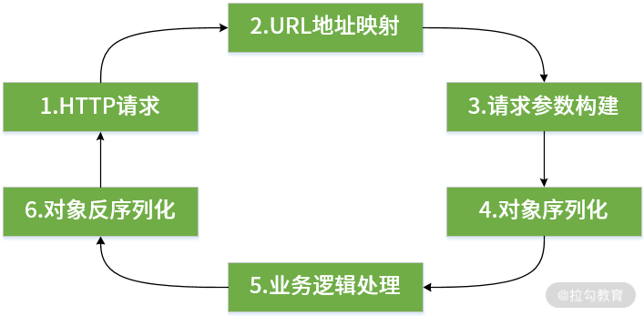
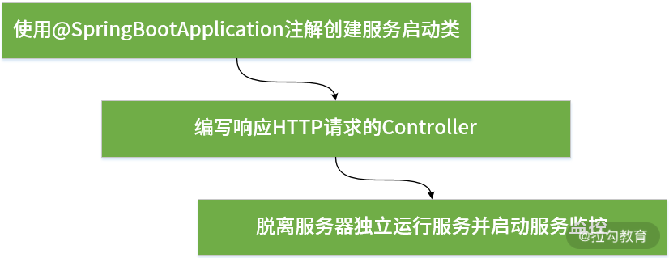
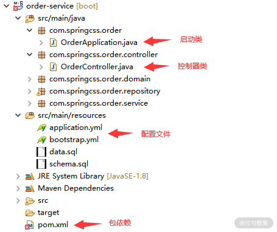
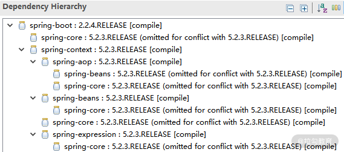

- 00 开篇词 从零开始：为什么要学习 Spring Boot？.md.html
- 01 家族生态：如何正确理解 Spring 家族的技术体系？.md.html
- 02 案例驱动：如何剖析一个 Spring Web 应用程序？.md.html
- 03 多维配置：如何使用 Spring Boot 中的配置体系？.md.html
- 04 定制配置：如何创建和管理自定义的配置信息？.md.html
- 05 自动配置：如何正确理解 Spring Boot 自动配置实现原理？.md.html
- 06 基础规范：如何理解 JDBC 关系型数据库访问规范？.md.html
- 07 数据访问：如何使用 JdbcTemplate 访问关系型数据库？.md.html
- 08 数据访问：如何剖析 JdbcTemplate 数据访问实现原理？.md.html
- 09 数据抽象：Spring Data 如何对数据访问过程进行统一抽象？.md.html
- 10 ORM 集成：如何使用 Spring Data JPA 访问关系型数据库？.md.html
- 11 服务发布：如何构建一个 RESTful 风格的 Web 服务？.md.html
- 12 服务调用：如何使用 RestTemplate 消费 RESTful 服务？.md.html
- 13 服务调用：如何正确理解 RestTemplate 远程调用实现原理？.md.html
- 14 消息驱动：如何使用 KafkaTemplate 集成 Kafka？.md.html
- 15 消息驱动：如何使用 JmsTemplate 集成 ActiveMQ？.md.html
- 16 消息驱动：如何使用 RabbitTemplate 集成 RabbitMQ？.md.html
- 17 安全架构：如何理解 Spring 安全体系的整体架构？.md.html
- 18 用户认证：如何基于 Spring Security 构建用户认证体系？.md.html
- 19 服务授权：如何基于 Spring Security 确保请求安全访问？.md.html
- 20 服务监控：如何使用 Actuator 组件实现系统监控？.md.html
- 21 指标定制：如何实现自定义度量指标和 Actuator 端点？.md.html
- 22 运行管理：如何使用 Admin Server 管理 Spring 应用程序？.md.html
- 23 数据测试：如何使用 Spring 测试数据访问层组件？.md.html
- 24 服务测试：如何使用 Spring 测试 Web 服务层组件？.md.html
- 结束语 以终为始：Spring Boot 总结和展望.md.html
- 捐赠
02 案例驱动：如何剖析一个 Spring Web 应用程序？
在 01 讲中，我们提到 Spring 家族具备很多款开源框架，开发人员可以基于这些开发框架实现各种 Spring 应用程序。在 02 讲中，我们无意对所有这些 Spring 应用程序的类型和开发方式过多展开，而是主要集中在基于 Spring Boot 开发面向 Web 场景的服务，这也是互联网应用程序最常见的表现形式。在介绍基于 Spring Boot 的开发模式之前，让我们先将它与传统的 Spring MVC 进行简单对比。
Spring MVC VS Spring Boot
在典型的 Web 应用程序中，前后端通常采用基于 HTTP 协议完成请求和响应，开发过程中需要完成 URL 地址的映射、HTTP 请求的构建、数据的序列化和反序列化以及实现各个服务自身内部的业务逻辑，如下图所示：

HTTP 请求响应过程
我们先来看基于 Spring MVC 完成上述开发流程所需要的开发步骤，如下图所示：

基于 Spring MVC 的 Web 应用程序开发流程
上图中包括使用 web.xml 定义 Spring 的 DispatcherServlet、完成启动 Spring MVC 的配置文件、编写响应 HTTP 请求的 Controller 以及将服务部署到 Tomcat Web 服务器等步骤。事实上，基于传统的 Spring MVC 框架开发 Web 应用逐渐暴露出一些问题，比较典型的就是配置工作过于复杂和繁重，以及缺少必要的应用程序管理和监控机制。
如果想优化这一套开发过程，有几个点值得我们去挖掘，比方说减少不必要的配置工作、启动依赖项的自动管理、简化部署并提供应用监控等。而这些优化点恰巧推动了以 Spring Boot 为代表的新一代开发框架的诞生，基于 Spring Boot 的开发流程见下图：

基于 Spring Boot 的 Web 应用程序开发流程
从上图中可以看到，它与基于 Spring MVC 的开发流程在配置信息的管理、服务部署和监控等方面有明显不同。作为 Spring 家族新的一员，Spring Boot 提供了令人兴奋的特性，这些特性的核心价值在于确保了开发过程的简单性，具体体现在编码、配置、部署、监控等多个方面。
首先，Spring Boot 使编码更简单。我们只需要在 Maven 中添加一项依赖并实现一个方法就可以提供微服务架构中所推崇的 RESTful 风格接口。
其次，Spring Boot 使配置更简单。它把 Spring 中基于 XML 的功能配置方式转换为 Java Config，同时提供了 .yml 文件来优化原有基于 .properties 和 .xml 文件的配置方案，.yml 文件对配置信息的组织更为直观方便，语义也更为强大。同时，基于 Spring Boot 的自动配置特性，对常见的各种工具和框架均提供了默认的 starter 组件来简化配置。
最后，在部署方案上，Spring Boot 也创造了一键启动的新模式。Spring Boot 部署包结构参考下图：

Spring Boot部署包结构
从图中我们可以看到，相较于传统模式下的 war 包，Spring Boot 部署包既包含了业务代码和各种第三方类库，同时也内嵌了 HTTP 容器。这种包结构支持 java –jar application.jar 方式的一键启动，不需要部署独立的应用服务器，通过默认内嵌 Tomcat 就可以运行整个应用程序。
最后，基于 Spring Boot 新提供的 Actuator 组件，开发和运维人员可以通过 RESTful 接口获取应用程序的当前运行时状态并对这些状态背后的度量指标进行监控和报警。例如可以通过“/env/{name}”端点获取系统环境变量、通过“/mapping”端点获取所有 RESTful 服务、通过“/dump”端点获取线程工作状态以及通过“/metrics/{name}”端点获取 JVM 性能指标等。
剖析一个 Spring Web 应用程序
针对一个基于 Spring Boot 开发的 Web 应用程序，其代码组织方式需要遵循一定的项目结构。在 02 讲中，如果不做特殊说明，我们都将使用 Maven 来管理项目工程中的结构和包依赖。一个典型的 Web 应用程序的项目结构如下图所示：

Spring Boot Web 项目结构图
在上图中，有几个地方需要特别注意，我也在图中做了专门的标注，分别是包依赖、启动类、控制器类以及配置，让我们讲此部分内容分别做一些展开。
包依赖
Spring Boot 提供了一系列 starter 工程来简化各种组件之间的依赖关系。以开发 Web 服务为例，我们需要引入 spring-boot-starter-web 这个工程，而这个工程中并没有具体的代码，只是包含了一些 pom 依赖，如下所示：
- org.springframework.boot:spring-boot-starter
- org.springframework.boot:spring-boot-starter-tomcat
- org.springframework.boot:spring-boot-starter-validation
- com.fasterxml.jackson.core:jackson-databind
- org.springframework:spring-web
- org.springframework:spring-webmvc
可以看到，这里包括了传统 Spring MVC 应用程序中会使用到的 spring-web 和 spring-webmvc 组件，因此 Spring Boot 在底层实现上还是基于这两个组件完成对 Web 请求响应流程的构建。
如果我们使用 Spring Boot 2.2.4 版本，你会发现它所依赖的 Spring 组件都升级到了 5.X 版本，如下图所示：

Spring Boot 2.2.4 版本的包依赖示意图
在应用程序中引入 spring-boot-starter-web 组件就像引入一个普通的 Maven 依赖一样，如下所示。
<dependency>
<groupId>org.springframework.boot</groupId>
<artifactId>spring-boot-starter-web</artifactId>
</dependency>
一旦 spring-boot-starter-web 组件引入完毕，我们就可以充分利用 Spring Boot 提供的自动配置机制开发 Web 应用程序。
启动类
使用 Spring Boot 的最重要的一个步骤是创建一个 Bootstrap 启动类。Bootstrap 类结构简单且比较固化，如下所示：
import org.springframework.boot.SpringApplication;
import org.springframework.boot.autoconfigure.SpringBootApplication;
@SpringBootApplication
public class HelloApplication {
public static void main(String[] args) {
SpringApplication.run(HelloApplication.class, args);
}
}
显然，这里引入了一个全新的注解 @SpringBootApplication。在 Spring Boot 中，添加了该注解的类就是整个应用程序的入口，一方面会启动整个 Spring 容器，另一方面也会自动扫描代码包结构下的 @Component、@Service、@Repository、@Controller 等注解并把这些注解对应的类转化为 Bean 对象全部加载到 Spring 容器中。
控制器类
Bootstrap 类为我们提供了 Spring Boot 应用程序的入口，相当于应用程序已经有了最基本的骨架。接下来我们就可以添加 HTTP 请求的访问入口，表现在 Spring Boot 中也就是一系列的 Controller 类。这里的 Controller 与 Spring MVC 中的 Controller 在概念上是一致的，一个典型的 Controller 类如下所示：
@RestController
@RequestMapping(value = "accounts")
public class AccountController {
@Autowired
private AccountService accountService;
@GetMapping(value = "/{accountId}")
public Account getAccountById(@PathVariable("accountId") Long accountId) {
Account account = accountService.getAccountById(accountId);
return account;
}
}
请注意，以上代码中包含了 @RestController、@RequestMapping 和 @GetMapping 这三个注解。其中，@RequestMapping 用于指定请求地址的映射关系，@GetMapping 的作用等同于指定了 GET 请求的 @RequestMapping 注解，而 @RestController 注解是传统 Spring MVC 中所提供的 @Controller 注解的升级版，相当于就是 @Controller 和 @ResponseEntity 注解的结合体，会自动使用 JSON 实现序列化/反序列化操作。
配置文件
我们注意到，在 src/main/resources 目录下存在一个 application.yml 文件，这就是 Spring Boot 中的主配置文件。例如，我们可以将如下所示的端口、服务名称以及数据库访问等配置信息添加到这个配置文件中：
server:
port: 8081
spring:
application:
name: orderservice
datasource:
driver-class-name: com.mysql.cj.jdbc.Driver
url: jdbc:mysql://127.0.0.1:3306/appointment
username: root
password: root
事实上，Spring Boot 提供了强大的自动配置机制，如果没有特殊的配置需求，开发人员完全可以基于 Spring Boot 内置的配置体系完成诸如数据库访问相关配置信息的自动集成。
案例驱动：SpringCSS
介绍完了基于 Spring Boot 创建一个 Web 应用的基本流程之后，我们将引出本课程的案例系统 SpringCSS，这里的 CSS 是对客户服务系统 Customer Service System 的简称。客服服务是电商、健康类业务场景中非常常见的一种业务场景，我们将通过构建一个精简但又完整的系统来展示 Spring Boot 相关设计理念和各项技术组件。
现实场景下的客户服务业务逻辑一般都非常复杂，而案例系统的目的在于演示技术实现过程，不在于介绍具体业务逻辑。所以，我们对案例的业务流程做了高度的简化，但涉及的各项技术都可以直接应用到日常开发过程中。
SpringCSS 整体架构
在 SpringCSS 中，存在一个 customer-service，这是一个 Spring Boot 应用程序，也是整个案例系统中的主体服务。在该服务中，我们可以将采用经典的分层架构，即将服务分成 Web 层、Service 层和 Repository 层。
在客服系统中，我们知道其核心业务是生成客户工单。为此，customer-service 一般会与用户服务 account-service 进行交互，但因为用户账户信息的更新属于低频事件，所以我们设计的实现方式是 account-service 通过消息中间件的方式将用户账户变更信息主动推送给 customer–service，从而完成用户信息的获取操作。而针对 order-service，其定位是订单系统，customer-service 也需要从该服务中查询订单信息。SpringCSS 的整个系统交互过程如下图所示：

SpringCSS 系统的整体架构图
在上图中，引出了构建 SpringCSS 的多项技术组件，在后续课程中我们会对这些技术组件做专题介绍。
从案例实战到原理剖析
更进一步，通过案例帮你完成基于 Spring Boot 框架构建 Web 应用程序是 02 讲的一大目标，但也不是唯一目标。作为扩展，希望我们通过对优秀开源框架的学习，掌握各个核心组件背后的运行机制，进而深入理解架构的实现原理。
在本专栏中，我们将通过熟悉源码，剖析 Spring Boot 中核心组件的工作原理，典型的场景包括 Spring Boot 的自动配置实现原理、数据库访问实现原理、HTTP 远程调用实现原理等。
通过源码级的深入剖析学习上述核心组件的实现原理时，你可以掌握系统架构设计和实现过程中的方法和技巧，并指导日常的开发工作。
小结与预告
案例分析是掌握一个框架应用方式的最好方法。本课程是一款以案例驱动的 Spring Boot 应用程序开发课程，今天我们主要针对一个典型的 Spring Boot Web 应用程序的组织结构和开发方式进行了详细介绍，并引出了贯穿整个课程体系的 SpringCSS 案例系统。
© 2019 - 2023 Liangliang Lee. Powered by gin and hexo-theme-book.